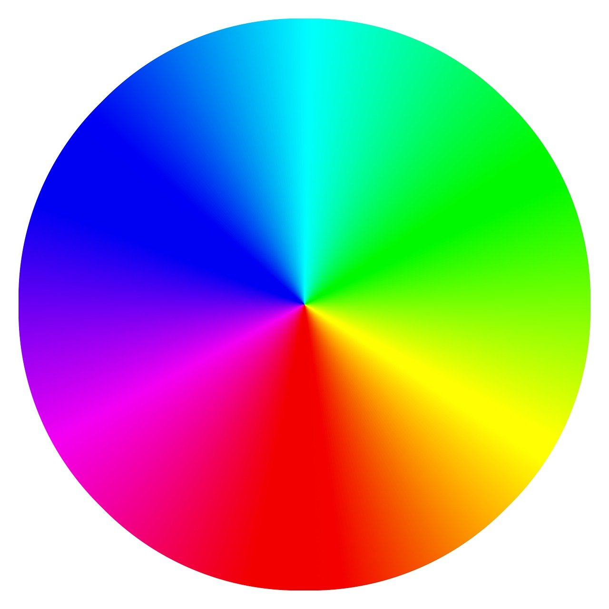

Color Wheel

The beautiful world of colors
Color theory is the study of how colors interact and how to use them to create specific visual effects and evoke emotions. It's a practical guide for mixing colors and is based on the principles of the color wheel, which shows the relationships between primary, secondary, and tertiary colors. Color theory is used by artists and designers to choose color combinations that create visual harmony and convey a specific mood or message.